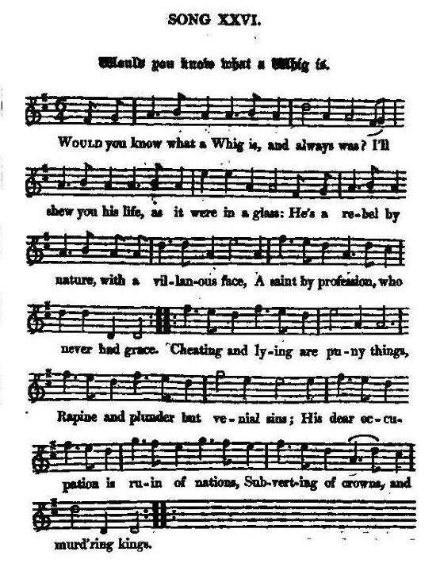

Would you know what a Whig is
Qu'est-ce qu'un Whig, voulez-vous le savoir?
Auteur inconnu
Tune - Mélodie"Would you have a young virgin"
from Hogg's "Jacobite Reliques" N°26
Sequenced by Christian Souchon
|
To the tune
:
“Would you have a young virgin of fifteen years” is the title Thomas D’Urfey used for a song he set to this melody in his play "The Modern Prophets" (1709) in the time of the reign of Charles II [1660-1685]. He also published it in his "Pills to Purge Melancholy", vol. 1 (1719, pg. 132). The tune was said to have been an old one at the time, with an earlier name being “Poor Robin’s Maggot .” Would ye have a young virgin of fifteen years, You must tickle her fancy with sweats and dears, Ever toying, and playing, and sweetly, sweetly, Sing her a love sonnet and charm her ears, Wittily, prettily, talk her down, Chase her, praise her, if fair or brown, Sooth her and smooth her, And tease her and please her, And touch but her smicket, and all’s your own. (smicket=smock) The tune was published by John Gay in his "Beggar's Opera" (1729), where it appears as "If the heart of a man is depressed with cares. " The tune was also employed in the ballad operas "Livery Rake and Country Lass" (London, 1733), "The Female Rake" (London, 1736). The tune was used for dancing and appears - in John Young’s editions of Playford’s "Dancing Master" of 1718 as “Would You Court a Young Virgin: or, Poor Robin’s Maggot” (a maggot was a trifle, or plaything, whim, or fancy; from the Italian maggioletta), and again in "Dancing Master" vol. II, 4th ed. 1728, page 148; in 1719, in J. Walsh’s "Compleat Country Dancing Master", vol. 2 (London, pg. 167), - and John and William Neal printed it in Dublin c. 1726 in "A Choice Collection of Country Dances with their Proper Tunes" (pg. 14). In the 19th century the tune was incorporated into the stylish and popular “Lancer’s Quadrilles” as the third (jig) movement, entitled “La Native.” Source "The Fiddler's Companion" (cf. Links). |
 If the heart of a Man Air to the same tune in "The Beggar's Opera" |
A propos de la mélodie
"Pour conquérir une fille de quinze ans " est le titre donné par Thomas d'Urfey à une chanson qu'il composa sur cette mélodie pour sa pièce "Les prophètes modernes" (1709) dont l'action se situait sous le règne de Charles II. Il la publia également dans ses "Pilules contre la mélancolie, vol. 1 (1719, p. 132). On dit que l'air était ancien, déjà à l'époque, son titre d'origine étant: "La marotte du pauvre Robin". Pour conquérir une fille de quinze ans Il faut flatter sa vanité gentiment, Jouer, badiner et suavement, pour Lui plaire, chanter un sonnet d'amour. Tourne avec esprit de beaux discours, Brune ou bien blonde, fais-lui la cour, Endormis-la: Tu la verras bientôt Te céder si tu touches son sarrau. (sarrau=corsage) La mélodie fut publiée par John Gay dans son "Opéra du Gueux" (1729), associé à un air qui commence par "Si le cœur d'un homme ploie sous les soucis" . Elle fut aussi mise à contribution dans les "ballad operas" Le roué en livrée et la villageoise" (Londres 1733), "La rouée" (Londres, 1736). Elle fut aussi utilisée comme air à danser : - dans les éditions par John Young du "Maître à danser" de Playford de 1718, sous le titre de "Comment faire la cour à une jeune vierge" ou "la marotte de Robin" (anglais, "maggot" de l'italien "maggioletta"), puis à nouveau dans le "Maître à danser", vol. II, 4ème édition 1728, page 148; - en 1719, chez J. Walsh, dans son "Maître complet de la contredanse", vol. 2 (Londres, p.167). - et, à Dublin vers 1726, dans le "Recueil de contredanses choisies avec leurs mélodies" de John et William Neal (p. 14). Au 19ème siècle, la mélodie fut intégrée dans la danse à la mode "le Quadrille des Lanciers": c'est le 3ème mouvement, la gigue intitulée "La naïve". Source "The Fiddler's Companion" (cf. Liens). |

|
WOULD YOU KNOW WHAT A WHIG IS?
1. Would you know what a Whig is, and always was? I'll shew you his life, as it were in a glass: He's a rebel by nature, with a villanous face, A saint by profession, who never had grace. Cheating and lying are puny things, Rapine and plunder but venial sins; His dear occupation is ruin of nations, Subverting of crowns and murd'ring kings. 2. To shew that he came from a wight of worth: 'Twas Lucifer's pride that bore the elf; 'Twas bloody barbarity gave him birth; Ambition the midwife that brought him forth; Judas his tutor was, till he grew big; Hypocrisy taught him to care not a fig For all that was sacred: so thus was created, And brought to the world, what you call a Whig. 3. Spew'd up among mortals from hellish jaws, He suddenly strikes at religion and laws, With civil dissensions, and bloody inventions, And all for to push on the good old cause. Still cheating and lying he plays his game, Always dissembling, yet still the same, Till he fills the creation with crimes of damnation, Then goes to the devil, from whence he came. Source: "The Jacobite Relics of Scotland, being the Songs, Airs and Legends of the Adherents to the House of Stuart" collected by James Hogg, published in Edinburgh by William Blackwood in 1819. |
QU'EST-CE QU'UN WHIG, VOULEZ-VOUS LE SAVOIR?
1. Qu'est-ce donc qu'un Whig, voulez-vous le savoir? Pour vous le décrire, je tends un miroir Rebelle par nature, aux traits de vilain. Un saint de métier dont le ciel ne veut point. Tricher, mentir sont des peccadilles! Péché véniel, quand on vole ou pille Son obsession: la ruine des nations, Le régicide, et l'usurpation. 2. Ce n'est pas n'importe-qui qui l'a créé: Lucifer est fier de l'avoir engendré. Mis au monde par la pire barbarie, Accouchée par l'ambition et l'envie; Enfant, son précepteur fut Judas; Dame Hypocrisie lui enseigna De ne se soucier plus que d'une guigne Des valeurs sacrées: voilà le Whig! 3. Vomi par l'enfer au milieu des humains, Aux lois et à la foi, il s'en prend, soudain, Fomentant guerre civile et bains de sang Qui servent la cause de ses mandants. La fraude et le mensonge ne font Que changer de forme, non de fond. Quand ses crimes auront submergé l'univers, Le Whig alors regagnera l'enfer! (Trad. Christian Souchon(c)2009) |
|
"This is one of the most violent of all the party songs, bitter as they are. It was often sung by the Tory clubs in Scotland, at their festive meetings, during the late war, in detestation of those who deprecated the principles of Pitt. It is a good deal in unison with the following prose character of a Whig, drawn up by the celebrated Butler."
(Follows a long diatribe to the effect that Whigs are not commendable characters...) |
"Voilà l'un des plus violents de tous les chants de parti, qui ne sont pourtant jamais tendres. Les clubs de Tory d'Ecosse aimaient à l'entonner lors de leurs fêtes, à la fin de la guerre , par haine de ceux qui méprisaient les principes de Pitt. On trouve les mêmes idées dans le portrait en prose d'un Whig, brossé par le célèbre Buttler."
(Suit une longue diatribe dont il ressort que les Whigs n'étaient pas des gens recommandables...) |
|
|
|